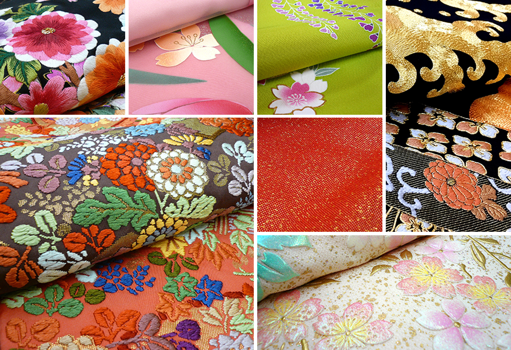
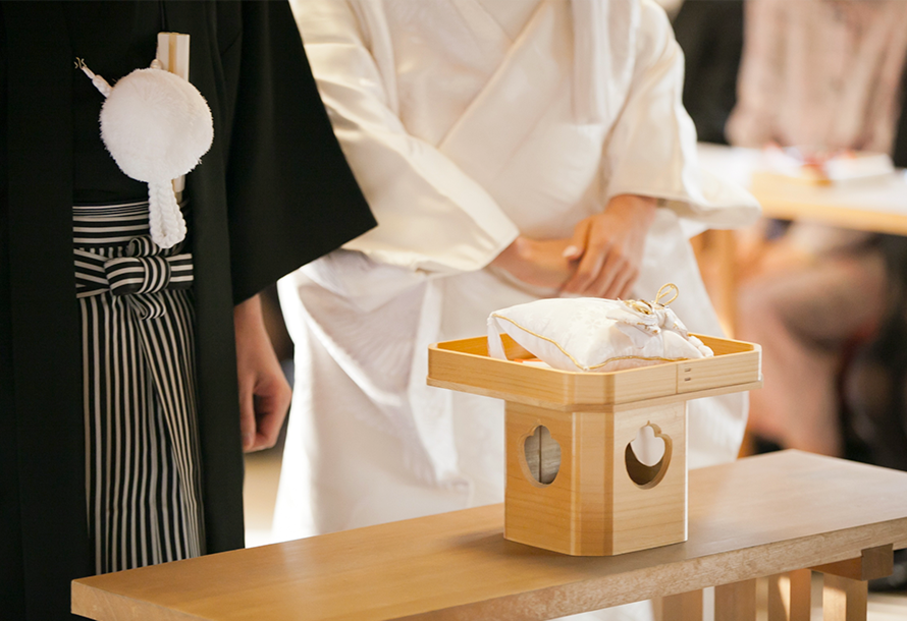
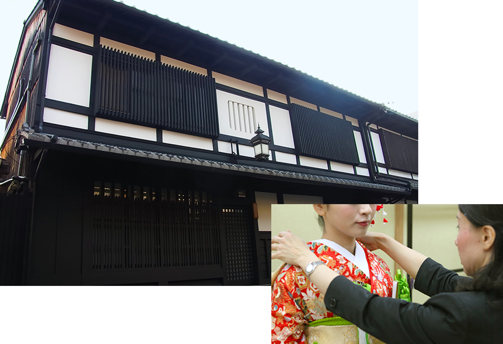
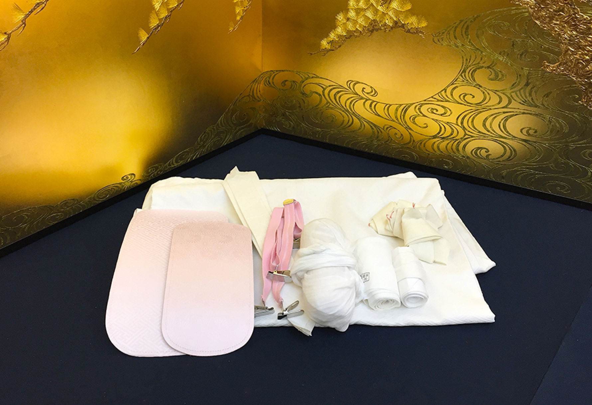

華結びについて
誰もが憧れる、京都西陣の色打掛
千年の伝統文化を受け継ぐ職人が技を生かし、
贅を尽くした京都西陣の花嫁衣装は、まさに芸術品。
一生に一度の晴れの日を、花嫁を美しく魅せる最高の衣装で迎えて欲しい。
製造卸直営の華結びだから、特別価格でお届けできます。
店舗やご自宅で本物の衣装を見て触れて、違いを感じてください。
01
最高級の衣装を格安で
卓越した技術と時間を有する「相良刺繍」をはじめ、最高級織物の「唐織」、豪華な「金彩加工」が施された色打掛など、京都の職人がひとつひとつ手作業で仕立てあげた西陣の最高級の衣装をご用意しております。また、「京 和装 WEDDING華結び」は製造卸直営ですので、高品質の衣装をリーズナブルな料金設定でレンタルしていただけます。
衣装製作02
京都最大級の衣装200点
長く愛される古典柄や現代的な色柄など、それぞれのニーズにお応え出来るように取り揃えた衣装は白無垢・色打掛・引振袖を合わせて200点以上。「京 和装 WEDDING 華結び」は着物の本場、京都西陣の老舗衣装店が運営していますので、和装の量とバリエーションは京都最大。大切な日に身にまとう婚礼衣装、お気に入りの一枚がきっと見つかります。
レンタル衣装一覧
03
往復送料無料・持込み料一部負担
大切な衣装は念のためご使用前々日に会場へお届け。往復送料は全国どこでも華結びが全額を負担！挙式会場の他にも美容室などの新郎新婦様が着付けをされる場所へお送り致します。また、気になる会場への持ち込み料も負担しますのでお気軽にご相談ください（レンタル料金によっては全額または一部負担となります。詳しくはスタッフにお問い合わせください）。

04
京町屋でゆっくりご試着
「京 和装 WEDDING 華結び」の店舗は大正末期に建てられた伝統的な京町家造り。奥庭に続く和室でのお衣装選びは、実際にご試着いただきお顔映りなどをご確認いただけます。衣装は画像でご覧になるのと実物を手に取ってその質感と色を感じていただくのとでは印象が違います。ぜひ京町家での雰囲気を楽しみながらゆっくりと衣装をお選びください。

05
着付け必要品全てセット
和装の婚礼衣装を着るにはたくさんの小物が必要です。花嫁さんの着付け専用のものもまわりでお客様ご自身で揃えるのは大変。華結びではお衣装はもちろん着付けに必要なものは全てセットにしてお送り致しますので、当日忘れ物などの心配はありません。

06
宅配試着サービス
遠方にお住まい、お仕事のご都合など様々な理由にて来店が難しいお客様のために、宅配試着サービスを行っております。試着される衣装をレンタル契約していただくと、ご試着サービスの料金が無料になる嬉しいサービスです。ぜひ一度お試しください。詳しくは電話やメールでスタッフにご相談ください。
サービスの詳しい内容